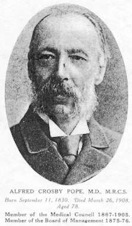

CHOLERA, DIARRHŒA AND DYSENTERY :
HOMŒOPATHIC PREVENTION AND CURE.
by John Henry Clarke, M. D.
Presented by Médi-TCHOLERA, DIARRHŒA AND DYSENTERY :
HOMŒOPATHIC PREVENTION AND CURE.
by John Henry Clarke, M. D.Extraordinary member, Royal Medical Society, Edinburgh ;
Fellow of the British Homœopathic Society ;
Physician to London Homœopathic Hospital ;
Author of "Ars Medici," "The Prescriber," "A Dictionnary of Domestic Medicine," "Cold-catching, Cold-curing Cold-preventing," "Indigestion," "Rheumatism and Sciatica ;"
Editor of the "Homœopathic World."PREFACE.
LIKE most generalisations, the old saying "A little knowledge is a dangerous thing" contains quite as much of error as it does of truth ; and if anything were needed to prove it, the experiences of lay homœopathists in the various cholera epidemics would be amply sufficient. In view of a possible return of cholera, it has seemed desirable to reprint with amplifications an article which appeared in the Homœopathic World of may last, entitled "What to do if Cholera comes", that the lay public may have within reach all the knowledge that is necessary to enable them to deal with any case of cholera that may occur in their midst in the absence of a medical man. Cholera is a disease that needs treatment at the very first onset, and if the treatment is not forthcoming, the patient may die before a doctor can be procured. It is analogous in this respect to cases of drowning or rupture of varicose veins ; anybody on the spot who has coolness and intelligence is bound to do what can be done without waiting for a doctor's arrival. It is therefore of supreme importance that all "First Aid" graduates, and, indeed, all who hold responsible positions as employers or guardians of others, should know what homœopathy has done and can do with such a scourge as cholera, that they may apply it at once should the emergency arise.
 That I may give a concrete instance of the value of lay homœopathy in a cholera epidemic I will quote a passage from Tract 42 of the Homœopathic League Series, adapted from an article on "The Cholera", by Dr. Pope, in the Homœopathic Review of October 1892.
"The epidemic which prevailed at the East End of London in 1866 furnished abundant evidence of the power of Camphor to control the early symptoms of cholera.
As it is at the very commencement of the illness that Camphor is useful, its administration is, necessarily more or less domestic ; the second stage generally reached ere a medical adviser is called in, and then Camphor is of little service. Hence it is rather to clergymen, missionaries and district visitors, who during an epidemic are constantly in and out of the houses of the poor, whether ill or well, than to medical men, that we have to look for evidence of its value.
"In an interesting and instructive account of the mission work accomplished by the late Rev. C. F. Lowder, of St Peter's, London Dock, during the epidemic of 1866, when alluding to the tincture of camphor the author writes. - ' When this was used in time, on the very first symptoms of the attack, it seldom failed to arrest the disease ; of this we had numberless proofs, as there was no difficulty in giving it at once before the medical man was able to attend the case.'
Mr Lewis, a gentleman who devoted his time to visiting among the poor in Spitalfields, distributed among them several thousands of small bottles of tincture of camphor, together with printed directions for its use. When doing so, Mr Lewis took the name and address of every applicant, and subsequently visited him. "Wherever", he writes, 'it has been resorted to early, it has been successful'.
"Miss Lowe, a lady who went to reside in a cholera-stricken district for the purpose of ministering to the wants of the poor, wrote : - 'I have to express the deepest gratitude to Mr Lewis for his invaluable gift of Camphor. He has supplied me abundantly, and I feel that there is no remedy like it, when taken in time. The Bible-woman, labouring in Holywell Lane district under Mrs Ranyard, has also been supplied, as a free gift by Mr Lewis, and can testify to many wonderful instances of its power.' "
In issuing this reprint it has seemed to me that I might enhance its value by adding a chapter on English cholera and ordinary diarrhœa, and another on dysentery.
JOHN H. CLARKE.
30 Clarges Street,
Piccadilly, W., June 1893.
Copyright © Médi-T 2002